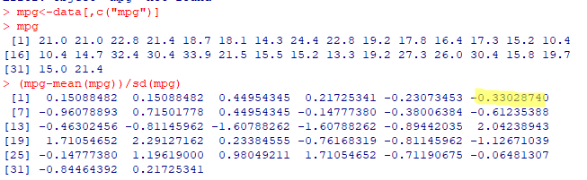

Question 1: I recognized this as a Chebyschev's Theorem problem. However, I misunderstood the prompt and entered in 8. Should have entered in the center of eight - four. I assume this was accounted for in a way since I got half credit ;)
Question 2: In my experience, quantiles can be arbetrary and not solely based on z-scores.
Question 3: I have a confession to make. I prefer using R over python, especially for problems such as these.
Here is my R attempt: 
Question 4:
Question 5: The word finite suggests to me a minimum and maximum.
Question 6: I began by only reading the chart shown in the lecture notes. However, I couldn't be certain, so I got to work.
Question 7:
Question 8: I am sure there is at least one case where this is the case.
Question 9: I think here i misinterpreted what "intercept" meant.
Question 10: Similar for question eight, I am sure there is at least one case where the regression line changes.
Question 1: Interval data follows an ordered ranking, but has no true zero. A classic example of this, and one gone over in lecture, is temperature.
Question 2: I solved this problem by altering the code given in lecture, changing the imputing configuration strategy to median, and the column to look at as "Age" to find the median as 21.
Question 3: This was a question I had to go back in to the lecture notes and relearn, but looking back on it, the answer makes sense.
Question 4: True. This is how we were taught in lecture.
Question 5: This problem was difficult for me and while I was working through the lab I got confused. I was not very confident in the math I did and I cannot find my work. Going back through it now I understand.
Question 6: I remember in lecture performing 3000 reptitions of a monte carlo simulation.
Question 7: I think the example I drew upon from question six is the same one for question seven. I remember the professor increasing the repitions until he reached a horizontal line he was satisfied with.
Question 8: I solved this problem by altering some code given in lecture. I changed the amount of "doors" in the array from three to four, and then setting k = random.randrange(4).
Question 9: Random as the library to import makes sense to me, even if I didn't already know. Monte Carlo simultations base a lot on randomness.
Question 10: random.shuffle makes sense. randint is also used, but as the name suggests, is for integers. When working with nominal data, shuffle works best.